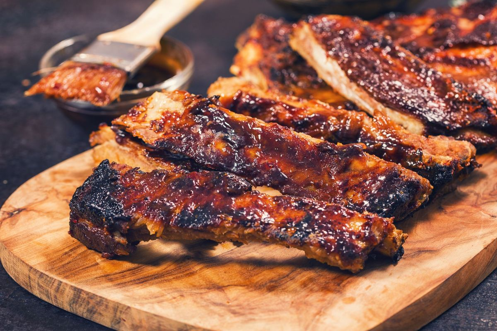

Nyama Choma Recipe

Yummy Nyama Choma
Nyama choma is a delicacy that is enjoyed by many Kenyans. When people convene for a corporate event
or family gatherings, there is a probability that nyama choma will be on the menu.
Ingridients
- 1 kg of goat meat or beef
- 2 tablespoons cooking oil
- 2 tablespoons salt
- A cup of water
- 1 large garlic
- 1 medium ginger
- 1 large lemon
- 1 pepper
Steps
- Wash the meat and let it dry.
- Make incisions on the meat then place it in a bowl.
- Make a mixture of grounded garlic, ginger, and lemon juice.
- Add the mixture to the meat in the bowl and mix it up to marinate. Ensure the mixture enters the cuts you've made.
- Cover the bowl and leave it for two hours(can be refrigerated).
- Light a charcoal grill.
- Wait for the coal to attain the desired temperature then place the meat over wire mesh.
- Add one tablespoon of salt to a little water. Mix it with a table-spoon of oil.
- Sprinkle it on the meat as it cooks.
- Once the exterior has turned golden brown, slice the meat to check it is cooked inside
- When the meat is ready, wrap it in a foil and place it on the grill having low heat as it waits to be served.
- The rice will simmer on low heat for about 15-20 minutes until it dries out.
When serving the meat, you should
cut it into chewable pieces for convenience. Nyama choma and ugali is the most
popular combination for enjoying
the dish. kachumbari is frequently used as a side dish.